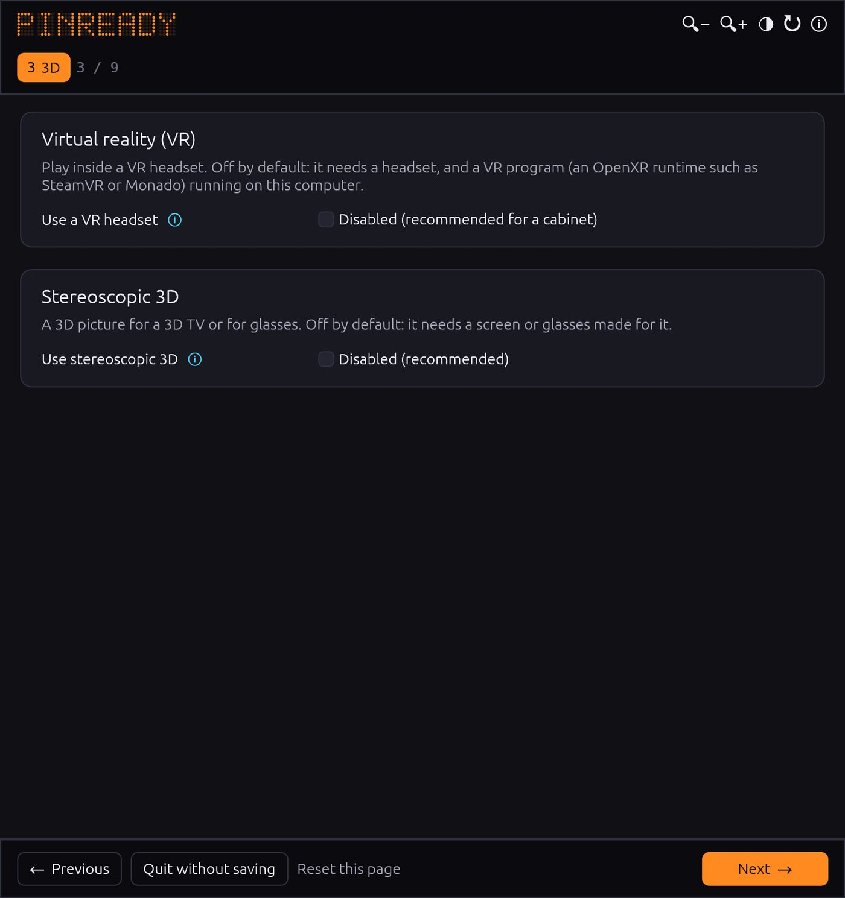

Kreator konfiguracji
Przy pierwszym uruchomieniu PinReady kreator prowadzi Cię przez dziewięć stron. Przy każdej opcji jest mały znacznik informacji: najedź na niego kursorem albo kliknij go na pincabie, by zobaczyć wyjaśnienie prostym językiem.
Twoje odpowiedzi są zapisywane w VPinballX.ini, pliku ustawień Visual Pinball, a komentarze w tym pliku są zachowywane. Jeśli plik jeszcze nie istnieje, PinReady najpierw prosi Visual Pinball o utworzenie kompletnego pliku domyślnego, a potem dopisuje do niego Twoje wybory. Kreator możesz otworzyć ponownie w dowolnej chwili przyciskiem Konfiguracja w launcherze lub poleceniem pinready --config: każde pole pokazuje Twoje bieżące ustawienia. Większość ustawień można też zmieniać podczas gry, z menu Visual Pinball pod F12.
Zresetuj konfigurację usuwa wszystkie odpowiedzi, odkłada globalny plik VPinballX.ini jako VPinballX.ini.reset-backup i zaczyna od pierwszej strony. Twoje stoły pozostają nietknięte.
1. Ekrany

Pierwsza strona pokazuje wykryty system (na przykład Ubuntu 24.04 LTS · X11 · GNOME), dzięki czemu zgłoszenia błędów zawsze zawierają kontekst, pozwala wybrać język interfejsu i w razie potrzeby instaluje Visual Pinball.
- Liczba ekranów: 1 dla zwykłego komputera, 3 lub 4 dla pełnego pincaba (playfield, backglass, DMD i opcjonalny topper).
- Role: każdy wyświetlacz jest wymieniony z nazwą, rozdzielczością, częstotliwością odświeżania (Hz) i rozmiarem fizycznym. PinReady proponuje rolę na podstawie rozmiarów ekranów: największy zostaje playfieldem, potem backglass, DMD i topper. Zmień dowolną rolę z listy albo ustaw ekran jako Nieużywany.
- Tryb wyświetlania: Pulpit (w oknie, dla zwykłego komputera), Automat (playfield rysowany dla ekranu leżącego poziomo, backglass i DMD na własnych ekranach) lub Jeden ekran pełny (playfield i backglass na jednym wysokim ekranie). Przy 2 ekranach lub więcej przełącza się na Automat, a nadal możesz to zmienić.
- Zewnętrzne urządzenie DMD (ZeDMD, PinDMD…): zaznacz, jeśli masz fizyczny wyświetlacz wyniku; Visual Pinball wykrywa go przy starcie stołu.
- Wyłącz ekran dotykowy: wyłącza nakładkę dotykową VPX, przydatne, gdy playfield nie jest ekranem dotykowym albo gdy sterujesz automatem zdalnie.
- Wymiary automatu: szerokość i wysokość lockbara, nachylenie playfieldu, Twój wzrost i miejsce, w którym stoisz. Przeciągaj uchwyty na rysunku albo wpisz wartości; nadają one widokowi 3D właściwą perspektywę.
2. Obraz

Ustawienia grafiki playfieldu. Rada ze strony: zacznij od wartości domyślnych, potem dostosuj do swojego komputera.
- Synchronizacja: Bez synchronizacji, Synchronizacja pionowa, Synchronizacja adaptacyjna lub Frame pacing, domyślne w Visual Pinball. Każdy wybór wyjaśnia, co daje, a co kosztuje: płynność czy opóźnienie sterowania.
- Limit FPS: domyślnie Maks., co podąża za częstotliwością odświeżania ekranu playfieldu, więc żadna klatka nie jest rysowana szybciej, niż ekran zdoła ją pokazać. Naciśnij Wybierz liczbę, by ustawić własny limit. Jeśli Twój ekran potrafi więcej, niż podaje strona, najpierw ustaw jego częstotliwość odświeżania w ustawieniach wyświetlacza systemu (PinReady nie może jej zmienić), a potem wróć.
- Kompresuj tekstury (domyślnie włączone) pakuje obrazy stołu tak, by zajmowały mniej pamięci graficznej, kosztem nieco dłuższego pierwszego ładowania każdego stołu.
- Jakość obrazu: supersampling, MSAA, antyaliasing w postprocessingu (FXAA i inne), wyostrzanie, odbicia i maksymalny rozmiar tekstur.
- Pokaż FPS (domyślnie włączone) wyświetla w grze licznik klatek, przydatny do sprawdzenia ustawień zaraz po konfiguracji.
- Okrągła kula (domyślnie włączone) sprawia, że kula nie wygląda na lekko jajowatą, gdy porusza się szybko. Wyłącznie kosmetyczne.
- Efekty wizualne: miękkie cienie (ambient occlusion), poświata wokół jasnych świateł, rozmycie ruchu kuli, ostrzejsze tekstury pod kątem, odbicia całego stołu, wstępnie renderowane klatki oraz gładkość kuli i ramp. Każdy pokazuje zalecaną wartość; jeśli gra się zacina, najpierw wyłącz te z dołu listy.
3. 3D

Dwa opcjonalne bloki, oba domyślnie wyłączone, bo automat ich nie potrzebuje.
- Wirtualna rzeczywistość (VR): gra w goglach. Potrzebujesz gogli oraz programu VR (środowiska OpenXR, takiego jak SteamVR lub Monado) uruchomionego na komputerze. Po włączeniu wybierasz, kiedy startuje VR, częstotliwość odświeżania gogli, co w międzyczasie pokazuje pulpit oraz kierowanie dźwięku.
- Stereoskopowe 3D: obraz 3D dla telewizora 3D lub okularów. Po włączeniu wybierasz format 3D i dostosowujesz odległość między oczami, jasność i nasycenie kolorów.
4. Sterowanie

Każda akcja Visual Pinball ma dwie kolumny, Klawiatura i Joystick, i obie działają równolegle. Kliknij Przypisz i naciśnij klawisz lub przycisk: klawisz wypełnia kolumnę klawiatury, przycisk joysticka kolumnę joysticka. Przypisz wszystko automatycznie przeprowadza przez wszystkie akcje za jednym razem. Najważniejsze akcje (flippery, MagnaSave, start, kredyt, wystrzelenie kuli…) są pokazane na początku; zaawansowane są o jedno kliknięcie dalej. PinReady ostrzega, gdy klawisz jest już użyty przez inną akcję.
Płytki sterujące do pinballa. Gdy wykryta zostanie płytka Pinscape KL25Z, Pinscape Pico, DudesCab lub PinOne, PinReady wybiera pasujący profil i wypełnia kolumnę joysticka fabrycznym układem przycisków płytki; Visual Pinball obsługuje wtedy plunger i nudge z akcelerometru samodzielnie. Wybierz Brak, by przypisać każdy przycisk samodzielnie. Wykryty gamepad może też służyć do flipperów, plungera i nudge.
KL25Z (KL Shield V5.1 / Brain / Rig Master)
| Przycisk | Etykieta na płytce | Akcja VPX |
|---|---|---|
| 0 | START | Start |
| 1 | EXTRA-B | ExtraBall |
| 2 | COIN1 | Credit1 |
| 3 | COIN2 | Credit2 |
| 4 | L BALL | LaunchBall |
| 5 | EXIT | ExitGame |
| 7 | L FLIPP | LeftFlipper + LeftStagedFlipper |
| 8 | R FLIPP | RightFlipper + RightStagedFlipper |
| 9 | L MAGNA | LeftMagna |
| 10 | R MAGNA | RightMagna |
| 11 | FIRE | Lockbar |
| 13 | DOOR | CoinDoor |
| 14 | SERVICE EXIT | Service1 |
| 15 | SERVICE - | Service2 |
| 16 | SERVICE + | Service3 |
| 17 | ENTER | Service4 |
| 19 | VOL- | VolumeDown |
| 20 | VOL+ | VolumeUp |
Pinscape Pico (OpenPinballDevice)
| Przycisk | Etykieta na płytce | Akcja VPX |
|---|---|---|
| 0 | Start | Start |
| 1 | Wyjście | ExitGame |
| 2 | Dodatkowa kula | ExtraBall |
| 3 | Moneta 1 | Credit1 |
| 4 | Moneta 2 | Credit2 |
| 5 | Moneta 3 | Credit3 |
| 6 | Moneta 4 | Credit4 |
| 7 | Wystrzel kulę | LaunchBall |
| 8 | Ogień | Lockbar |
| 9 | Lewy flipper | LeftFlipper |
| 10 | Prawy flipper | RightFlipper |
| 11 | Górny lewy flipper | LeftStagedFlipper |
| 12 | Górny prawy flipper | RightStagedFlipper |
| 13 | MagnaSave lewy | LeftMagna |
| 14 | MagnaSave prawy | RightMagna |
| 16 | Slam tilt | SlamTilt |
| 17 | Drzwiczki na monety | CoinDoor |
| 18 | Serwis: anuluj | Service1 |
| 19 | Serwis: w dół | Service2 |
| 20 | Serwis: w górę | Service3 |
| 21 | Serwis: zatwierdź | Service4 |
| 22 | Nudge w lewo | LeftNudge |
| 23 | Nudge do przodu | CenterNudge |
| 24 | Nudge w prawo | RightNudge |
| 25 | Głośniej | VolumeUp |
| 26 | Ciszej | VolumeDown |
DudesCab (Arnoz)
| Przycisk | Etykieta na płytce | Akcja VPX |
|---|---|---|
| 0 | Start | Start |
| 1 | Dodatkowa kula | ExtraBall |
| 2 | Moneta 1 | Credit1 |
| 3 | Moneta 2 | Credit2 |
| 4 | Wystrzel kulę | LaunchBall |
| 5 | Powrót | ExitGame |
| 7 | Lewy flipper | LeftFlipper + LeftStagedFlipper |
| 8 | Prawy flipper | RightFlipper + RightStagedFlipper |
| 9 | Magna lewa | LeftMagna |
| 10 | Magna prawa | RightMagna |
| 12 | Ogień | Lockbar |
| 13 | Drzwiczki | CoinDoor |
| 14 | ROM: wyjście | Service1 |
| 15 | ROM - | Service2 |
| 16 | ROM + | Service3 |
| 17 | ROM: zatwierdź | Service4 |
| 18 | VOL - | VolumeDown |
| 19 | VOL + | VolumeUp |
CSD PinOne
| Przycisk | Etykieta na płytce | Akcja VPX |
|---|---|---|
| 0 | VPX 1 | RightFlipper |
| 1 | VPX 2 | RightMagna |
| 2 | VPX 3 | LeftFlipper |
| 3 | VPX 4 | LeftMagna |
| 4 | VPX 5 | ExtraBall |
| 5 | VPX 6 | Start |
| 6 | VPX 7 | Credit1 |
| 7 | VPX 8 | ExitGame |
| 8 | VPX 9 | Lockbar |
| 15 | VPX 16 | VolumeUp |
| 16 | VPX 17 | VolumeDown |
| 17 | VPX 18 | CoinDoor |
| 18 | VPX 19 | Service1 |
| 19 | VPX 20 | Service2 |
| 20 | VPX 21 | Service3 |
| 21 | VPX 22 | Service4 |
| 23 | VPX 24 | LaunchBall |
Numery przycisków to te, które zgłasza SDL, liczone od 0. Przyciski, których profil nie przypisuje, nie są wymienione.
5. Akcesoria

Efekty DOF (światła i gadżety)
VPX 10.8.1 standalone zawiera DOF (Direct Output Framework), który steruje solenoidami, światłami, silnikiem shakera, knockerem lub koguticiem automatu. Potrzebuje tylko konfiguracji opisującej Twój sprzęt. Strona poprowadzi Cię przez ten proces:
- Załóż darmowe konto w VPUniverse ConfigTool.
- Utwórz tabelę odpowiadającą Twojemu automatowi, dodaj jego system wyjść (Pinscape, LedWiz, PinOne, DudesCab, PacLed, TeensyStripController…) i przypisz urządzenia do wyjść.
- Kliknij Generate, pobierz plik zip i rozpakuj go do folderu docelowego: przycisk Otwórz folder w menedżerze plików zaprowadzi Cię tam.
- Włącz DOF: Visual Pinball jest dostarczany z wyłączonymi wszystkimi wtyczkami, więc dopóki tego nie zrobisz, nic nie zadziała w grze.
PinReady potrafi też wyszukać Twoją płytkę wyjść przez USB i podpowiedzieć, jaki typ kontrolera wybrać w ConfigTool. Na Linuxie pokazuje, kopiuje lub instaluje reguły udev dające dostęp do płytki. Tester wyjść, który kolejno pulsuje każde wyjście, z wbudowanym bezpiecznikiem zatrzymania, działa na razie tylko na symulatorze.
Head tracking
Dla automatów z Kinectem lub kamerą na backglassie albo topperze: perspektywa stołu podąża za Twoją głową. Jedno kliknięcie pobiera wtyczkę head tracking wraz z demem, włącza wtyczkę, przełącza Visual Pinball w tryb widoku Okno, którego wymaga, i otwiera demo, abyś mógł(-ła) zainstalować sterowniki kamery i sprawdzić, czy jesteś śledzony(-a). Niedostępne na Macach z procesorem Intel.
6. Tilt / Nudge


Ustawienia akcelerometru, który wykrywa, kiedy potrząsasz (nudge) automatem.
- Typ czujnika nudge: Kontroler gier dla drążka gamepada, Czujnik intencji dla automatów z płytką akcelerometru, taką jak Pinscape lub DudesCab (ignoruje drobne wibracje i zamienia prawdziwe szturchnięcie w nudge), Czujnik automatu dla szybkiego, czystego czujnika, którego odczyty są stosowane tak, jak zmierzono.
- Siła: jak mocno potrząśnięcie popycha kulę. W praktyce to jedyne ustawienie warte dostrojenia.
- Strefa martwa: drobne odczyty poniżej tego poziomu są ignorowane, więc wibracje i szum czujnika nie poruszają kuli.
- Zakres akcelerometru: fakt o Twojej płytce, a nie preferencja. PinReady odczytuje go z płytki, gdy ta go udostępnia, i ostrzega, jeśli wybrana wartość się nie zgadza.
- Próg TILT: jak mocno możesz szturchnąć automat, zanim gra ogłosi tilt.
Potrząśnij automatem i obserwuj podgląd na żywo: punkt pokazuje każde potrząśnięcie na tle okręgów strefy martwej, progu nudge i tiltu; przekroczenie czerwonego okręgu oznacza TILT. PinReady zapamiętuje też zmierzony szczyt, informuje, gdy kąt tiltu jest poza zasięgiem czujnika, i prosi o sprawdzenie, w którą stronę zamontowano płytkę, ponieważ płytka obrócona w złą stronę zamienia lub odbija kierunki nudge.
Strona symuluje to, co Visual Pinball robi z każdym nudge, z własnym modelem automatu i ustawieniami domyślnymi VPX. Niebieski punkt pokazuje wirtualne wahadło: VPX ogłasza tilt na podstawie wahadła, które sumuje serię uderzeń, a czerwony punkt to tylko czujnik. Wahadło dotyka okręgu tiltu dokładnie wtedy, gdy VPX ogłosiłby tilt. Aby to wypróbować, kołysz automatem na boki serią mocnych klepnięć, każde nieco silniejsze.
Jak VPX odczytuje nudge
- Na boki jest czulej niż do przodu. VPX mnoży odczyt na boki przez 4/3, a szturchnięcie na bok jest zwykle łatwiej wykonać niż to do przodu.
- Pchnięcie się liczy, pociągnięcie nigdy. VPX szuka zamiaru odepchnięcia automatu od siebie. To, co idzie w Twoją stronę, jest zerowane, choćby było najmocniejsze, więc automat wahający się z powrotem po Twoim pchnięciu nigdy nie jest drugim nudge: on się tylko uspokaja. Strona rysuje tę strefę w stronę gracza.
- Uderzenie liczy się dopiero powyżej progu (1 m/s²). Wtedy VPX buduje krótkie, 25 ms pchnięcie o sile równej zmierzonemu szczytowi; surowy odczyt czujnika nie jest potem używany.
- Seria uderzeń się sumuje w wahadle, więc cztery klepnięcia z rzędu mogą wywołać tilt, którego jedno nigdy by nie wywołało.
Matematyka w tle
Strona pokazuje wzory, które oblicza VPX, po jednym bloku na typ czujnika (wybrany typ jest otwarty), a potem model automatu i pion, które wszystkie współdzielą. Jednostki: m/s² dla przyspieszeń, ms dla czasów, ° dla kąta tiltu. Bloki znajdują się w samej aplikacji, na stronie Nudge & tilt.
7. Dźwięk

Visual Pinball odtwarza dźwięk na dwóch urządzeniach, a PinReady wymienia Twoje karty dźwiękowe dla każdego z nich:
- Backglass: muzyka, głosy i ogólne dźwięki gry.
- Playfield: dźwięki mechaniczne (flippery, bumpery, toczenie się kuli). Dla surround lub SSF musi to być wyjście wielokanałowe.
Tryb wyjścia playfieldu. PinReady wstępnie wybiera tryb na podstawie wykrytej liczby kanałów i pokazuje schemat układu głośników wraz z wymaganym okablowaniem.
| Tryb | Dla |
|---|---|
| 2 kan. — Stereo z przodu | Zwykłe stereo, oba głośniki z przodu automatu. |
| 2 kan. — Stereo z tyłu (lockbar) | Zwykłe stereo, oba głośniki przy lockbarze, blisko gracza. |
| 5.1 — Tył przy lockbarze | Dodaje pozycjonowanie przód-tył; kanały tylne przy lockbarze. Wymaga 6-kanałowej karty dźwiękowej. |
| 5.1 — Przód przy lockbarze | To samo, z kanałami przednimi przy lockbarze. Wybierz ten, który odpowiada Twojemu okablowaniu. |
| SSF — Boki i tył przy lockbarze (Legacy) | Surround Sound Feedback ze starszym miksowaniem. |
| SSF — Boki i tył przy lockbarze (New) | Surround Sound Feedback z nowszym miksowaniem, zalecane. |
Okablowanie dla karty dźwiękowej 7.1, zalecana konfiguracja SSF (kolory gniazd mogą różnić się między kartami):
| Gniazdo | Kanały | Połączenie w automacie |
|---|---|---|
| Zielone (Front) | FL / FR | Głośniki backglassu (muzyka) lub system 2.1 |
| Czarne (Rear) | BL / BR | Exciter-y górne playfieldu (strona backglassu) |
| Szare (Side) | SL / SR | Exciter-y dolne playfieldu (strona lockbara / gracza) |
| Pomarańczowe (Center/Sub) | FC / LFE | Subwoofer lub bass shaker (opcjonalnie) |
Głośność i testy. Ustaw głośność muzyki i playfieldu, a potem sprawdź okablowanie: test 1 odtwarza w pętli muzykę na backglassie z balansem lewo/prawo; test 2 odtwarza dźwięk kolejno na każdym głośniku playfieldu i przesuwa toczącą się kulę od góry do dołu oraz od lewej do prawej. Jeśli kula porusza się w złą stronę z przodu do tyłu, zmień tryb wyjścia; jeśli z lewej do prawej, sprawdź okablowanie. Kartę dźwiękową z tylko 3 gniazdami (zielone, różowe, niebieskie) często można przełączyć na 5.1 lub 7.1: zobacz przewodniki dla Linuxa, Windows, macOS.
8. Stoły

Wybierz folder, w którym trzymasz stoły, jeden podfolder na stół: to układ używany przez Visual Pinball 10.8.1.
Tables/
└── Table Name/
├── Table Name.vpx table file (required)
├── Table Name.directb2s backglass (optional)
├── Table Name.ini per-table settings (optional)
├── Table Name.vbs script patch (optional)
├── medias/launcher.png launcher picture (optional)
├── pinmame/roms/<rom>.zip ROM (required for ROM tables)
├── altsound/<rom>/ alt-sound pack (optional)
├── pupvideos/<rom>/ PinUP Player videos (optional)
├── serum/<rom>/<rom>.crz Serum colorization (optional)
└── vni/<rom>/<rom>.vni VNI colorization, with .pal (optional)Obsługiwana jest koloryzacja DMD w formatach Serum (.crz) i VNI (.vni + .pal); formaty zastrzeżone, takie jak .pac, nie są obsługiwane.
- Przenieś swoją kolekcję do nowego układu. Wskaż PinReady jeden folder (kolekcję stołów, starą instalację VPX, a nawet cały dysk). Zindeksuje wszystko, co jest w środku, a potem da każdemu stołowi własny folder z ROM-em, backglassem, paczką PUP, alt-soundem, koloryzacją i muzyką, które do niego należą. Jeśli Twoje stoły mają już po jednym folderze, zostają tam, gdzie są, a brakujące pliki są dodawane. Najpierw wykonaj próbę na sucho, by zobaczyć podgląd, a potem wybierz kopiowanie (bezpieczne) lub przenoszenie plików.
- Zgodność z Visual Pinball Standalone (domyślnie wyłączona): PinReady rozpoznaje skrypt wbudowany w każdy stół i, gdy Le-Syl21/vpx-standalone-scripts ma do niego łatkę, umieszcza załatany plik
.vbsobok pliku.vpx. Twój własny plik.vbsjest zachowywany jako<table>.pre_standalone.vbs. - Wzbogacanie katalogu (domyślnie włączone): dopasowuje każdy stół do Virtual Pinball Spreadsheet i pobiera obraz backglassu oraz dżingiel audio z VPinMediaDB do folderu
mediasstołu. Pierwsza synchronizacja pobiera około 7 MB danych katalogu, plus kilka MB na każdy dopasowany stół. Wyłącz to w automacie bez internetu.
9. System

Opcjonalne udogodnienia, najlepsze dla dedykowanego automatu:
- Uruchamiaj PinReady automatycznie przy starcie.
- Skróty w menu i skojarzenie plików
.vpx: dodaje PinReady i Visual Pinball do menu aplikacji (GNOME, KDE lub XFCE na Linuxie, Launchpad na macOS, menu Start w Windows) i otwiera pliki.vpxw Visual Pinball. Odznacz to i ponownie zakończ kreator, aby to usunąć. - Skrót na pulpicie, a w GNOME także przypięcie do docka.
- Własne serwery lustrzane: pobieraj łatki skryptów i bazę mediów z własnego serwera zamiast z GitHuba.